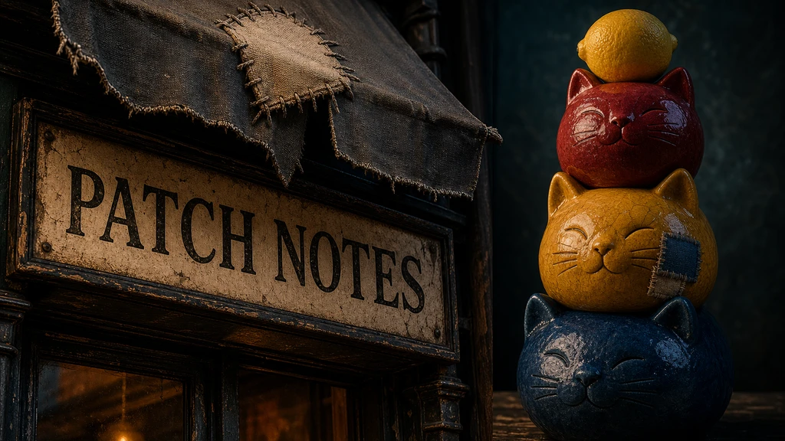

The capability axes — can it spell, can it count?

The six scenes are a deliberate test suite: each prompt is engineered to break a different capability — materials, faces, tilt-shift, emotion, crowds at depth. But a test suite is only as honest as the axes it spans, and the dangerous failure mode is the blind spot you can't see from inside it. Before adding a seventh scene on instinct, I went looking for our blind spots somewhere external.
The external yardstick
I read through danielrosehill/Text-To-Image-Test-Prompts — ~160 prompts across 32
categories, a community catalogue of the things people actually use to stress image models.
Not to copy it; it's a grab-bag, and we keep our own bare, photoreal house style. I used it
as an audit checklist. For each of its 32 categories I asked one question: does any of our
six scenes already probe this? Lighting, depth of field, photorealism, faces, dense
composition, emotion — all yes, covered by van/spirit/doll/embrace/kingdom. Most categories
came back a comfortable "already exercised."
Two did not. Two were capabilities the matrix is structurally blind to — and they happen to be the two where our lineup disagrees most violently. Those earned a scene.
Gap one: legible text (signage)
Nothing in the matrix asks a model to write. That's a glaring omission, because legible text is the single axis where our fourteen models split hardest: ideogram, qwen2512 and the flux pair can put a readable word on a sign, while the sdxl trio (see the menagerie) reliably turns letters into noodles. A real, repeatable, dramatic capability gap that the gallery currently never shows.
So: a storefront sign bearing a short real word. The brand fusion was too good to leave
on the table — the sign reads "PATCH NOTES": the podcast name, a literal patch, and a
text test in one frame. Short is deliberate. A long string only guarantees mush and adds no
signal; two clean words is the whole experiment. And even the s (CLIP) variant still asks
for the word — when sdxl garbles it, that garble is the result, not a bug to prompt
around.
Gap two: instruction-following (instructions)
This one is subtler. We already split every prompt into s/m/l tiers — CLIP, T5, and
LLM text encoders (one prompt, three token budgets).
But today that axis is invisible in the output. It's a token budget — a shortening
exercise — not a visible capability. You cannot look at a render and tell that an LLM
encoder understood the brief where CLIP only caught keywords.
A multi-constraint composition makes it visible. Borrowing the catalogue's
very-specific-instructions idea: an arrangement built from checkable constraints — exact
counts, named colours in a stated order, spatial relationships. Three stacked ceramic cats,
specified colours bottom-to-top, the middle one wearing the patch, a single lemon balanced
on top, plain studio background. A correct render means the model parsed the brief; a wrong
count, colour, or order means it didn't. That delta is the data — and it should track the
encoder tier, finally making s/m/l mean capability, not just length. Quirky on
purpose, too: a sterile checkerboard would waste the frame when an odd little still life
tests the same thing and is worth looking at.
The patch goes permanent
The cloth repair patch began life as a van detail — mismatched, frayed, whip-stitched, concealing a tear — a quiet compositional instruction that models love to ignore. It came back on the dragon's scales. As of these two scenes it stops being a recurring detail and becomes a mandated motif: every new scene carries the patch, and deliberately on a different surface each time.
van metal → dragon scales → signage's woven awning → the instruction scene's glazed ceramic.
The bet is simple: an unexpected element a model must integrate everywhere, across materials it was never trained to expect a patch on, is exactly the kind of thing that separates the careful models from the rest. Vary the surface and you test patch integration against metal sheen, organic scale, woven cloth, and glaze — four hard material-continuity problems wearing one recurring costume. It's the same instinct as running bare, fair builders: a consistent probe across every cell beats a flattering one, because the consistency is what makes the comparison mean anything.
The discipline: every scene costs a full matrix
Here's why I read 32 categories to keep 2. A scene isn't a prompt — it's a whole column of the matrix: all 3 seeds × 14 models × every step rung. Call it ~180–200 images, many hours of compute, dominated by the slow undistilled models (chroma, ideogram, longcat, ovis, wan) whose per-step cost is brutal. Adding a scene on a whim is signing up for an overnight render. So the bar was deliberately savage, and most of the catalogue got cut:
- Already covered —
lighting-instructions,symbolism,emotion: van/spirit/kingdom/embrace exercise these already; near-zero marginal signal. - Unjudgeable —
conflicting-prompts("hot ice", "dark light"): fun, but there's no correct output to compare against, so it can't be scored fairly. Not gallery-grade. - Redundant with the text axis —
infographics,logo-design,graphic-design: they all lean on text, and data-viz and logos come out uniformly weak and un-pretty. - World-knowledge / legally iffy —
world-flags,landmarks,brands: trademark and recall trivia, niche and hard to judge. - Wrong shape for the matrix —
character-consistency,image-to-image,inpainting: they need multiple images or a source image; ours is one-shot text-to-image by definition.
The only honourable mention was stylistic-following, and I cut even that — for now — to
protect the photoreal fair-comparison.
And the tool that turned "expensive" from a hunch into a number is lig plan: drop the two
scenes into config/gallery.ts, run lig plan, and it prints the exact count of images the
additions push onto the backlog. You see the bill before you pay it — which is the entire
point of being ruthless at the design stage instead of discovering the cost three nights
into a render.
What's not in this post
Results. These scenes aren't rendered yet — this is the design call, written down while the why is still fresh. Two new axes (can it spell, can it count?), one through-line (the patch, now spanning four materials). When the matrix fills in, we'll get a step-count reckoning for capability instead of steps: who can read their own signage, who can follow a three-item brief, and — if the bet holds — whether the prompt_size tiers finally earn their letters.